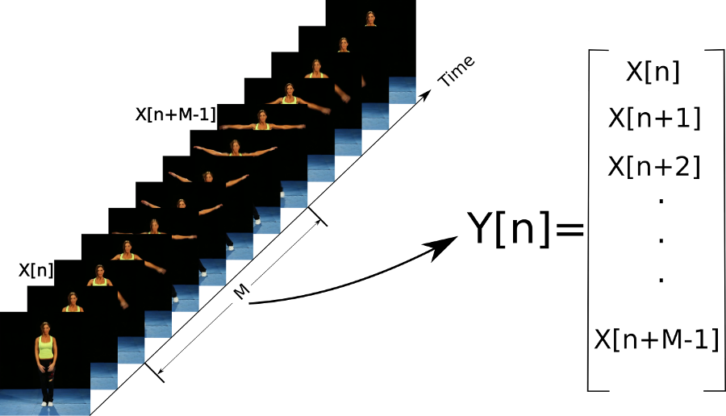
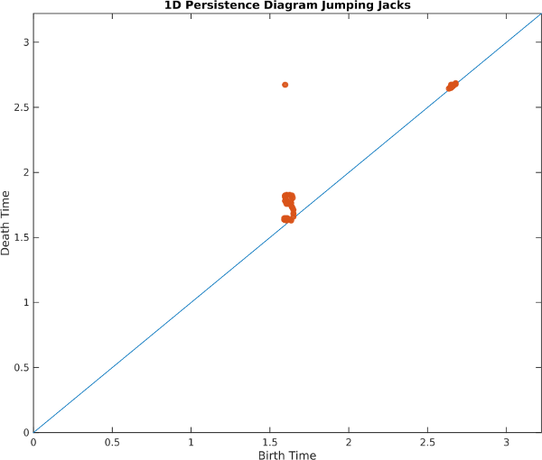
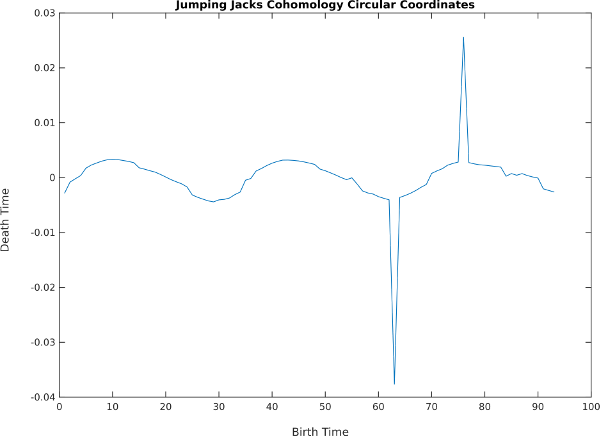
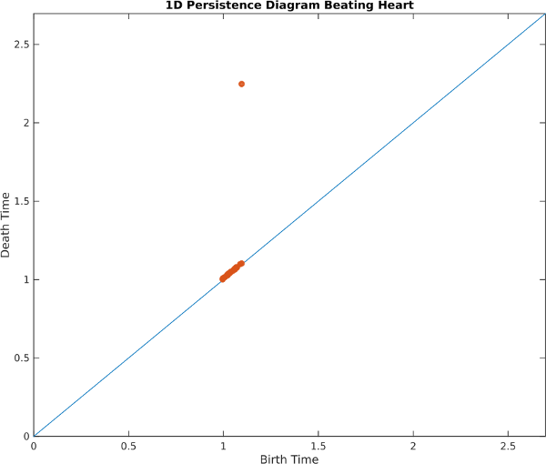
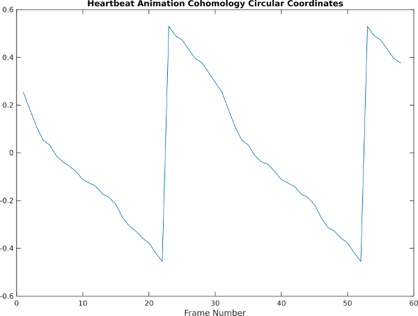

Sliding Window Videos
- Overview
- Jumping Jacks Video
- Explanation of High Dimensionality
- Jumping Jacks Principal Components
- Synthetic Beating Heart
- Heart Principal Components
Overview
The idea is exactly the same as sliding windows for 1D time series, except now we take stacks of image frames in time. We then concatenate ever pixel in every frame one large Euclidean vector. The figure below depicts this scheme:
Jumping Jacks Video
Below is a video of a woman doing jumping jacks, next to PCA of the raw video (i.e. no sliding window; each frame of the video is a single Euclidean vector, with each pixel as a dimension)As you can see, the embedding forms a topological path, and the path retraces itself on the way back down. In the embedding space, it is therefore impossible to tell the difference between "going up" and "going down." When we add the sliding window, however, this turns into a topological loop, and we can now disambiguate all states in the embedding space:
However, PCA to 3 dimensions only retains about 14% of the variance in the dataset. In spite of this, we are able to see that there is a strong 1-cycle using topological tools, as seen in the 1D Rips persistence diagram below:

Also, 1D cohomology is able to parameterize the motion around the loop with circular coordinates:

Explanation of High Dimensionality
Why is so little variance explained by the first 3 principal components? In other words, why do these embeddings lie in such a high dimensional space? To understand this, we note a common case in natural videos of pixels jumping abruptly from the foreground into the background. This video shows a plot of the average RGB values in the green box drawn on the leftAs you can see, the pixels jump abruptly from foreground to background to foreground again, forming something like a square wave, which needs many harmonics to represent. As we noted in the 1D case, each harmonic needs two dimensions to represent, and this video at this resolution needs about 25 harmonics.
Jumping Jacks Principal Components
Let's take a look at the coordinate axes spanning the ellipses of the first few harmonics in the jumping jacks video. Since the sliding window embedding is a stack of frames, each axis can be played as a video:Original Video
1 | 2 | 3 | 4 |
5 | 6 | 7 | 8 |
As you can see, each pair of principal components forms an in phase and quadrature component of a harmonic (integer multiple) of the main periodic motion in the video. The first two form the smoothest sinusoidal approximation which goes through one cycle, the next two go through two cycles per period, etc. As in Fourier Series approximations of functions, higher pairs are needed to represent sharper transitions from foreground to background.
Synthetic Beating Heart
As another example, take the following animation of a beating heart:Here's what the sliding window embedding looks like with PCA:
and here are the persistence diagram and circular coordinates, which recover the cycle:


Heart Principal Components
As in the jumping jacks example, we can examine principal component directions in the embedding space and play them back as videos. Here are the results:Original Video
1 | 2 | 3 | 4 |
5 | 6 | 7 | 8 |